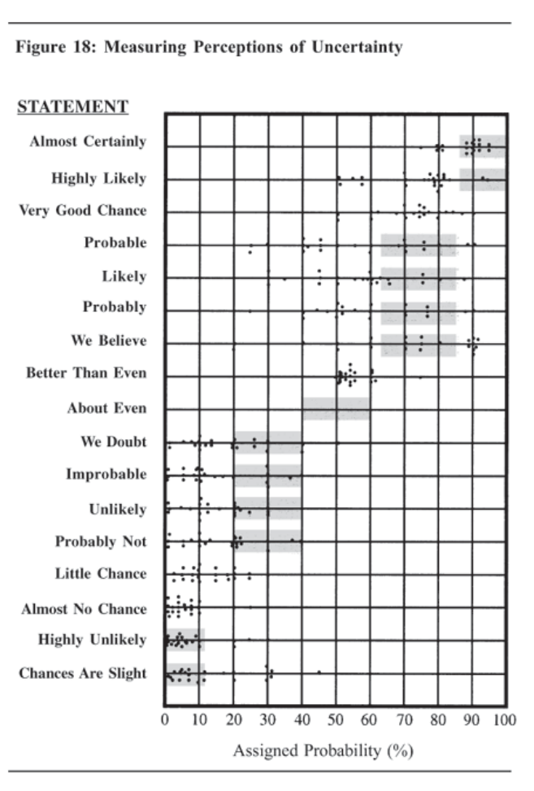

Chapter 12 Biases in Estimating Probabilities
In making rough probability judgments, people commonly depend upon one of several simplified rules of thumb that greatly ease the burden of decision. Using the “availability” rule, people judge the probability of an event by the ease with which they can imagine relevant instances of similar events or the number of such events that they can easily remember. With the “anchoring” strategy, people pick some natural starting point for a first approximation and then adjust this figure based on the results of additional information or analysis. Typically, they do not adjust the initial judgment enough. Expressions of probability, such as possible and probable, are a common source of ambiguity that make it easier for a reader to interpret a report as consistent with the reader’s own preconceptions. The probability of a scenario is often miscalculated. Data on “prior probabilities” are commonly ignored unless they illuminate causal relationships.
* * * * * * * * * * * * * * * * * * *
Availability Rule
One simplified rule of thumb commonly used in making probability estimates is known as the availability rule. In this context, “availability” refers to imaginability or retrievability from memory. Psychologists have shown that two cues people use unconsciously in judging the probability of an event are the ease with which they can imagine relevant instances of the event and the number or frequency of such events that they can easily remember.134 People are using the availability rule of thumb whenever they estimate frequency or probability on the basis of how easily they can recall or imagine instances of whatever it is they are trying to estimate.
Normally this works quite well. If one thing actually occurs more frequently than another and is therefore more probable, we probably can recall more instances of it. Events that are likely to occur usually are easier to imagine than unlikely events. People are constantly making inferences based on these assumptions. For example, we estimate our chances for promotion by recalling instances of promotion among our colleagues in similar positions and with similar experience. We estimate the probability that a politician will lose an election by imagining ways in which he may lose popular support. Although this often works well, people are frequently led astray when the ease with which things come to mind is influenced by factors unrelated to their probability. The ability to recall instances of an event is influenced by how recently the event occurred, whether we were personally involved, whether there were vivid and memorable details associated with the event, and how important it seemed at the time. These and other factors that influence judgment are unrelated to the true probability of an event. Consider two people who are smokers. One had a father who died of lung cancer, whereas the other does not know anyone who ever had lung cancer. The one whose father died of lung cancer will normally perceive a greater probability of adverse health consequences associated with smoking, even though one more case of lung cancer is statistically insignificant when weighing such risk. How about two CIA officers, one of whom knew Aldrich Ames and the other who did not personally know anyone who had ever turned out to be a traitor? Which one is likely to perceive the greatest risk of insider betrayal? It was difficult to imagine the breakup of the Soviet Union because such an event was so foreign to our experience of the previous 50 years. How difficult is it now to imagine a return to a Communist regime in Russia? Not so difficult, in part because we still have vivid memories of the old Soviet Union. But is that a sound basis for estimating the likelihood of its happening? When analysts make quick, gut judgments without really analyzing the situation, they are likely to be influenced by the availability bias. The more a prospective scenario accords with one’s experience, the easier it is to imagine and the more likely it seems. Intelligence analysts may be less influenced than others by the availability bias. Analysts are evaluating all available information, not making quick and easy inferences. On the other hand, policymakers and journalists who lack the time or access to evidence to go into details must necessarily take shortcuts. The obvious shortcut is to use the availability rule of thumb for making inferences about probability.
Many events of concern to intelligence analysts
. . .are perceived as so unique that past history does not seem relevant to the evaluation of their likelihood. In thinking of such events we often construct scenarios, i.e., stories that lead from the present situation to the target event. The plausibility of the scenarios that come to mind, or the difficulty of producing them, serve as clues to the likelihood of the event. If no reasonable scenario comes to mind, the event is deemed impossible or highly unlikely. If several scenarios come easily to mind, or if one scenario is particularly compelling, the event in question appears probable.135
US policymakers in the early years of our involvement in Vietnam had to imagine scenarios for what might happen if they did or did not commit US troops to the defense of South Vietnam. In judging the probability of alternative outcomes, our senior leaders were strongly influenced by the ready availability of two seemingly comparable scenarios—the failure of appeasement prior to World War II and the successful intervention in Korea. Many extraneous factors influence the imaginability of scenarios for future events, just as they influence the retrievability of events from memory. Curiously, one of these is the act of analysis itself. The act of constructing a detailed scenario for a possible future event makes that event more readily imaginable and, therefore, increases its perceived probability. This is the experience of CIA analysts who have used various tradecraft tools that require, or are especially suited to, the analysis of unlikely but nonetheless possible and important hypotheses. (Such techniques were discussed in Chapter 6, “Keeping an Open Mind” and Chapter 8, “Analysis of Competing Hypotheses.”) The analysis usually results in the “unlikely” scenario being taken a little more seriously. This phenomenon has also been demonstrated in psychological experiments.136 In sum, the availability rule of thumb is often used to make judgments about likelihood or frequency. People would be hard put to do otherwise, inasmuch as it is such a timesaver in the many instances when more detailed analysis is not warranted or not feasible. Intelligence analysts, however, need to be aware when they are taking shortcuts. They must know the strengths and weaknesses of these procedures, and be able to identify when they are most likely to be led astray. For intelligence analysts, recognition that they are employing the availability rule should raise a caution flag. Serious analysis of probability requires identification and assessment of the strength and interaction of the many variables that will determine the outcome of a situation.
Anchoring
Another strategy people seem to use intuitively and unconsciously to simplify the task of making judgments is called anchoring. Some natural starting point, perhaps from a previous analysis of the same subject or from some partial calculation, is used as a first approximation to the desired judgment. This starting point is then adjusted, based on the results of additional information or analysis. Typically, however, the starting point serves as an anchor or drag that reduces the amount of adjustment, so the final estimate remains closer to the starting point than it ought to be. Anchoring can be demonstrated very simply in a classroom exercise by asking a group of students to estimate one or more known quantities, such as the percentage of member countries in the United Nations that are located in Africa. Give half the students a low-percentage number and half a high-percentage number. Ask them to start with this number as an estimated answer, then, as they think about the problem, to adjust this number until they get as close as possible to what they believe is the correct answer. When this was done in one experiment that used this question, those starting with an anchor of 10 percent produced adjusted estimates that averaged 25 percent. Those who started with an anchor of 65 percent produced adjusted estimates that averaged 45 percent.137 Because of insufficient adjustment, those who started out with an estimate that was too high ended with significantly higher estimates than those who began with an estimate that was too low. Even the totally arbitrary starting points acted as anchors, causing drag or inertia that inhibited fulladjustment of estimates. Whenever analysts move into a new analytical area and take over responsibility for updating a series of judgments or estimates made by their predecessors, the previous judgments may have such an anchoring effect. Even when analysts make their own initial judgment, and then attempt to revise this judgment on the basis of new information or further analysis, there is much evidence to suggest that they usually do not change the judgment enough. Anchoring provides a partial explanation of experiments showing that analysts tend to be overly sure of themselves in setting confidence ranges. A military analyst who estimates future missile or tank production is often unable to give a specific figure as a point estimate. The analyst may, therefore, set a range from high to low, and estimate that there is, say, a 75-percent chance that the actual production figure will fall within this range. If a number of such estimates are made that reflect an appropriate degree of confidence, the true figure should fall within the estimated range 75 percent of the time and outside this range 25 percent of the time. In experimental situations, however, most participants are overconfident. The true figure falls outside the estimated range a much larger percentage of the time.138 If the estimated range is based on relatively hard information concerning the upper and lower limits, the estimate is likely to be accurate. If, however, the range is determined by starting with a single best estimate that is simply adjusted up and down to arrive at estimated maximum and minimum values, then anchoring comes into play, and the adjustment is likely to be insufficient. Reasons for the anchoring phenomenon are not well understood. The initial estimate serves as a hook on which people hang their first impressions or the results of earlier calculations. In recalculating, they take this as a starting point rather than starting over from scratch, but why this should limit the range of subsequent reasoning is not clear.
There is some evidence that awareness of the anchoring problem is not an adequate antidote.139 This is a common finding in experiments dealing with cognitive biases. The biases persist even after test subjects are informed of them and instructed to try to avoid them or compensate for them. One technique for avoiding the anchoring bias, to weigh anchor so to speak, may be to ignore one’s own or others’ earlier judgments and rethink a problem from scratch. In other words, consciously avoid any prior judgment as a starting point. There is no experimental evidence to show that this is possible or that it will work, but it seems worth trying. Alternatively, it is sometimes possible to avoid human error by employing formal statistical procedures. Bayesian statistical analysis, for example, can be used to revise prior judgments on the basis of new information in a way that avoids anchoring bias.140
Expression of Uncertainty
Probabilities may be expressed in two ways. Statistical probabilities are based on empirical evidence concerning relative frequencies. Most intelligence judgments deal with one-of-a-kind situations for which it is impossible to assign a statistical probability. Another approach commonly used in intelligence analysis is to make a “subjective probability” or “personal probability” judgment. Such a judgment is an expression of the analyst’s personal belief that a certain explanation or estimate is correct. It is comparable to a judgment that a horse has a three-to-one chance of winning a race. Verbal expressions of uncertainty—such as “possible,” “probable,” “unlikely,” “may,” and “could”—are a form of subjective probability judgment, but they have long been recognized as sources of ambiguity and misunderstanding. To say that something could happen or is possible may refer to anything from a 1-percent to a 99-percent probability. To express themselves clearly, analysts must learn to routinely communicate uncertainty using the language of numerical probability or odds ratios. As explained in Chapter 2 on “Perception,” people tend to see what they expect to see, and new information is typically assimilated to existing beliefs. This is especially true when dealing with verbal expressions of uncertainty. By themselves, these expressions have no clear meaning. They are empty shells. The reader or listener fills them with meaning through the context in which they are used and what is already in the reader’s or listener’s mind about that context. When intelligence conclusions are couched in ambiguous terms, a reader’s interpretation of the conclusions will be biased in favor of consistency with what the reader already believes. This may be one reason why many intelligence consumers say they do not learn much from intelligence reports.141 It is easy to demonstrate this phenomenon in training courses for analysts. Give students a short intelligence report, have them underline all expressions of uncertainty, then have them express their understanding of the report by writing above each expression of uncertainty the numerical probability they believe was intended by the writer of the report. This is an excellent learning experience, as the differences among students in how they understand the report are typically so great as to be quite memorable. In one experiment, an intelligence analyst was asked to substitute numerical probability estimates for the verbal qualifiers in one of his own earlier articles. The first statement was: “The cease-fire is holding but could be broken within a week.” The analyst said he meant there was about a 30-percent chance the cease-fire would be broken within a week. Another analyst who had helped this analyst prepare the article said she thought there was about an 80-percent chance that the cease-fire would be broken. Yet, when working together on the report, both analysts had believed they were in agreement about what could happen.142 Obviously, the analysts had not even communicated effectively with each other, let alone with the readers of their report.
Sherman Kent, the first director of CIA’s Office of National Estimates, was one of the first to recognize problems of communication caused by imprecise statements of uncertainty. Unfortunately, several decades after Kent was first jolted by how policymakers interpreted the term “serious possibility” in a national estimate, this miscommunication between analysts and policymakers, and between analysts, is still a common occurrence.143 I personally recall an ongoing debate with a colleague over the bona fides of a very important source. I argued he was probably bona fide. My colleague contended that the source was probably under hostile control. After several months of periodic disagreement, I finally asked my colleague to put a number on it. He said there was at least a 51-percent chance of the source being under hostile control. I said there was at least a 51-percent chance of his being bona fide. Obviously, we agreed that there was a great deal of uncertainty. That stopped our disagreement. The problem was not a major difference of opinion, but the ambiguity of the term probable. The table in Figure 18 shows the results of an experiment with 23 NATO military officers accustomed to reading intelligence reports. They were given a number of sentences such as: “It is highly unlikely that. . . .” All the sentences were the same except that the verbal expressions of probability changed. The officers were asked what percentage probability they would attribute to each statement if they read it in an intelligence report. Each dot in the table represents one officer’s probability assignment.144 While there was broad consensus about the meaning of “better than even,” there was a wide disparity in interpretation of other probability expressions. The shaded areas in the table show the ranges proposed by Kent.145 The main point is that an intelligence report may have no impact on the reader if it is couched in such ambiguous language that the reader can easily interpret it as consistent with his or her own preconceptions. This ambiguity can be especially troubling when dealing with low-probability, high-impact dangers against which policymakers may wish to make contingency plans. Consider, for example, a report that there is little chance of a terrorist attack against the American Embassy in Cairo at this time. If the Ambassador’s preconception is that there is no more than a one-in-ahundred chance, he may elect to not do very much. If the Ambassador’s preconception is that there may be as much as a one-in-four chance of an attack, he may decide to do quite a bit. The term “little chance” is consistent with either of those interpretations, and there is no way to know what the report writer meant. Another potential ambiguity is the phrase “at this time.” Shortening the time frame for prediction lowers the probability, but may not decrease the need for preventive measures or contingency planning. An event for which the timing is unpredictable may “at this time” have only a 5-percent probability of occurring during the coming month, but a 60percent probability if the time frame is extended to one year (5 percent per month for 12 months). How can analysts express uncertainty without being unclear about how certain they are? Putting a numerical qualifier in parentheses after the phrase expressing degree of uncertainty is an appropriate means of avoiding misinterpretation. This may be an odds ratio (less than a onein-four chance) or a percentage range (5 to 20 percent) or (less than 20 percent). Odds ratios are often preferable, as most people have a better intuitive understanding of odds than of percentages.

Assessing Probability of a Scenario
Intelligence analysts sometimes present judgments in the form of a scenario—a series of events leading to an anticipated outcome. There is evidence that judgments concerning the probability of a scenario are influenced by amount and nature of detail in the scenario in a way that is unrelated to actual likelihood of the scenario. A scenario consists of several events linked together in a narrative description. To calculate mathematically the probability of a scenario, the proper procedure is to multiply the probabilities of each individual event. Thus, for a scenario with three events, each of which will probably (70 percent certainty) occur, the probability of the scenario is.70 x.70 x.70 or slightly over 34 percent. Adding a fourth probable (70 percent) event to the scenario would reduce its probability to 24 percent. Most people do not have a good intuitive grasp of probabilistic reasoning. One approach to simplifying such problems is to assume (or think as though) one or more probable events have already occurred. This eliminates some of the uncertainty from the judgment. Another way to simplify the problem is to base judgment on a rough average of the probabilities of each event. In the above example, the averaging procedure gives an estimated probability of 70 percent for the entire scenario. Thus, the scenario appears far more likely than is in fact the case. When the averaging strategy is employed, highly probable events in the scenario tend to offset less probable events. This violates the principle that a chain cannot be stronger than its weakest link. Mathematically, the least probable event in a scenario sets the upper limit on the probability of the scenario as a whole. If the averaging strategy is employed, additional details may be added to the scenario that are so plausible they increase the perceived probability of the scenario, while, mathematically, additional events must necessarily reduce its probability.146
Base-Rate Fallacy
In assessing a situation, an analyst sometimes has two kinds of evidence available—specific evidence about the individual case at hand, and numerical data that summarize information about many similar cases. This type of numerical information is called a base rate or prior probability. The base-rate fallacy is that the numerical data are commonly ignored unless they illuminate a causal relationship. This is illustrated by the following experiment.147 During the Vietnam War, a fighter plane made a non-fatal strafing attack on a US aerial reconnaissance mission at twilight. Both Cambodian and Vietnamese jets operate in the area. You know the following facts: (a) Specific case information: The US pilot identified the fighter as Cambodian. The pilot’s aircraft recognition capabilities were tested under appropriate visibility and flight conditions. When presented with a sample of fighters (half with Vietnamese markings and half with Cambodian) the pilot made correct identifications 80 percent of the time and erred 20 percent of the time. (b) Base rate data: 85 percent of the jet fighters in that area are Vietnamese; 15 percent are Cambodian.
Question: What is the probability that the fighter was Cambodian rather than Vietnamese? A common procedure in answering this question is to reason as follows: We know the pilot identified the aircraft as Cambodian. We also know the pilot’s identifications are correct 80 percent of the time; therefore, there is an 80 percent probability the fighter was Cambodian. This reasoning appears plausible but is incorrect. It ignores the base rate—that 85 percent of the fighters in that area are Vietnamese. The base rate, or prior probability, is what you can say about any hostile fighter in that area before you learn anything about the specific sighting. It is actually more likely that the plane was Vietnamese than Cambodian despite the pilot’s “probably correct” identification. Readers who are unfamiliar with probabilistic reasoning and do not grasp this point should imagine 100 cases in which the pilot has a similar encounter. Based on paragraph (a), we know that 80 percent or 68 of the 85 Vietnamese aircraft will be correctly identified as Vietnamese, while 20 percent or 17 will be incorrectly identified as Cambodian. Based on paragraph (b), we know that 85 of these encounters will be with Vietnamese aircraft, 15 with Cambodian. Similarly, 80 percent or 12 of the 15 Cambodian aircraft will be correctly identified as Cambodian, while 20 percent or three will be incorrectly identified as Vietnamese. This makes a total of 71 Vietnamese and 29 Cambodian sightings, of which only 12 of the 29 Cambodian sightings are correct; the other 17 are incorrect sightings of Vietnamese aircraft. Therefore, when the pilot claims the attack was by a Cambodian fighter, the probability that the craft was actually Cambodian is only 12/29ths or 41 percent, despite the fact that the pilot’s identifications are correct 80 percent of the time. This may seem like a mathematical trick, but it is not. The difference stems from the strong prior probability of the pilot observing a Vietnamese aircraft. The difficulty in understanding this arises because untrained intuitive judgment does not incorporate some of the basic statistical principles of probabilistic reasoning. Most people do not incor-
porate the prior probability into their reasoning because it does not seem relevant. It does not seem relevant because there is no causal relationship between the background information on the percentages of jet fighters in the area and the pilot’s observation.148 The fact that 85 percent of the fighters in the area were Vietnamese and 15 percent Cambodian did not cause the attack to be made by a Cambodian rather than a Vietnamese. To appreciate the different impact made by causally relevant background information, consider this alternative formulation of the same problem. In paragraph (b) of the problem, substitute the following: (b) Although the fighter forces of the two countries are roughly equal in number in this area, 85 percent of all harassment incidents involve Vietnamese fighters, while 15 percent involve Cambodian fighters. The problem remains mathematically and structurally the same. Experiments with many test subjects, however, show it is quite different psychologically because it readily elicits a causal explanation relating the prior probabilities to the pilot’s observation. If the Vietnamese have a propensity to harass and the Cambodians do not, the prior probability that Vietnamese harassment is more likely than Cambodian is no longer ignored. Linking the prior probability to a cause and effect relationship immediately raises the possibility that the pilot’s observation was in error. With this revised formulation of the problem, most people are likely to reason as follows: We know from past experience in cases such as this that the harassment is usually done by Vietnamese aircraft. Yet, we have a fairly reliable report from our pilot that it was a Cambodian fighter. These two conflicting pieces of evidence cancel each other out. Therefore, we do not know—it is roughly 50-50 whether it was Cambodian or Vietnamese. In employing this reasoning, we use the prior probability information, integrate it with the case-specific information, and arrive at a conclusion that is about as close to the optimal answer (still 41 percent) as one is going to get without doing a mathematical calculation. There are, of course, few problems in which base rates are given as explicitly as in the Vietnamese/Cambodian aircraft example. When base rates are not well known but must be inferred or researched, they are even less likely to be used.149 The so-called planning fallacy, to which I personally plead guilty, is an example of a problem in which base rates are not given in numerical terms but must be abstracted from experience. In planning a research project, I may estimate being able to complete it in four weeks. This estimate is based on relevant case-specific evidence: desired length of report, availability of source materials, difficulty of the subject matter, allowance for both predictable and unforeseeable interruptions, and so on. I also possess a body of experience with similar estimates I have made in the past. Like many others, I almost never complete a research project within the initially estimated time frame! But I am seduced by the immediacy and persuasiveness of the case-specific evidence. All the causally relevant evidence about the project indicates I should be able to complete the work in the time allotted for it. Even though I know from experience that this never happens, I do not learn from this experience. I continue to ignore the non-causal, probabilistic evidence based on many similar projects in the past, and to estimate completion dates that I hardly ever meet. (Preparation of this book took twice as long as I had anticipated. These biases are, indeed, difficult to avoid!)